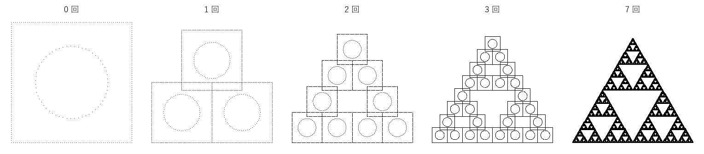
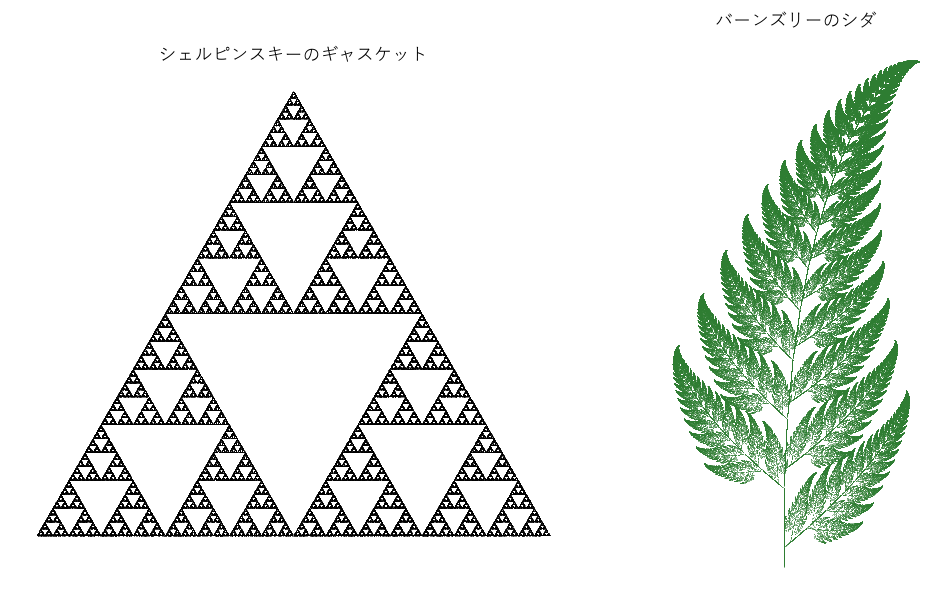
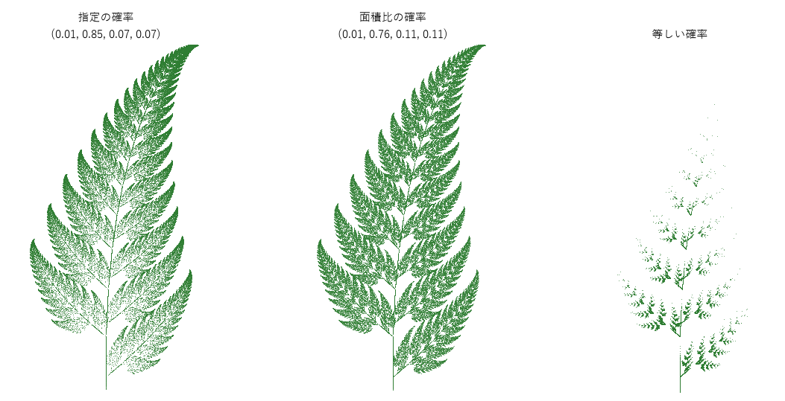
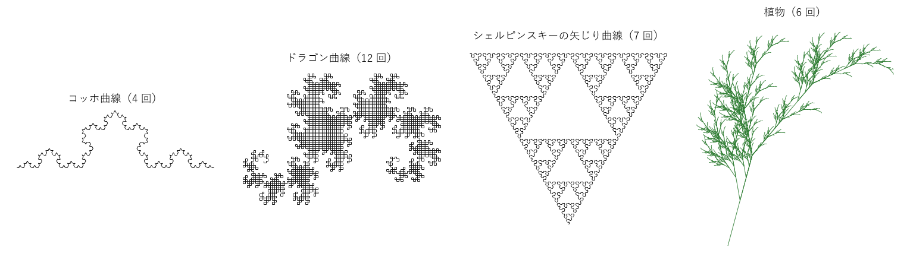

第 8 章 反復関数系と L-system
第 7 章の古典的なフラクタルは、「図形の一部を、縮小した自分自身の複製で置き換える」操作で作った。この章では、この操作を一般化した 2 つの方法を扱う。1 つは、いくつかの縮小写像の組でフラクタルを表す反復関数系（iterated function system、IFS）であり、もう 1 つは、文字列の書き換えで図形を生成する L-system である。どちらも、少ない規則で植物のような複雑な形を生成でき、ジェネラティブアートでよく使われる。
アフィン変換
平面上の点 \(\boldsymbol{x} = (x, y)\) を
に移す写像をアフィン変換（affine transformation）という。行列 \(A\) で拡大縮小、回転、鏡映、せん断（平行四辺形への変形）を、ベクトル \(\boldsymbol{t}\) で平行移動を表す。\(|\det A|\) は面積が何倍になるかを表す。
写像 \(f\) が、どの 2 点の距離も一定の割合 \(s < 1\) 以下に縮めるとき（\(|f(\boldsymbol{x}) - f(\boldsymbol{y})| \le s\,|\boldsymbol{x} - \boldsymbol{y}|\)）、\(f\) を縮小写像（contraction mapping）という。縮小写像を繰り返し適用すると、どの点から始めても、ただ 1 つの固定点に収束する（縮小写像の原理）。
サンプルでは、アフィン変換を次のクラスで表す。__call__ を定義しているので、f(points) のように関数として呼び出せる。
20class Affine:
21 """平面のアフィン変換 x -> A x + t."""
22
23 def __init__(self, a: float, b: float, c: float, d: float, e: float, f: float) -> None:
24 """行列 A = [[a, b], [c, d]] と平行移動 t = (e, f) を指定する."""
25 self.matrix = np.array([[a, b], [c, d]])
26 self.shift = np.array([e, f])
27
28 def __call__(self, points: Array) -> Array:
29 """点の集まり points（形は (n, 2)）を変換する."""
30 result: Array = points @ self.matrix.T + self.shift
31 return result
32
33 def contraction(self) -> float:
34 """面積の縮小率 |det A| を返す."""
35 return float(abs(np.linalg.det(self.matrix)))
反復関数系
いくつかの縮小写像の組 \(\{f_1, f_2, \ldots, f_m\}\) を反復関数系（IFS）という。図形（点の集合）\(S\) に対して、各写像で移した図形の和集合
を考える。1981 年にハッチンソンは、すべての \(f_i\) が縮小写像なら、\(W(A) = A\) を満たす（空でない有界な閉じた）図形 \(A\) がただ 1 つ存在し、どんな図形 \(S\) から始めても、\(W\) を繰り返し適用すると \(A\) に近づくことを示した。この \(A\) を IFS のアトラクタという。\(W(A) = A\) は、「\(A\) は、自分自身を縮小した \(m\) 個の複製を貼り合わせたものである」という自己相似性を表している。
たとえば、正三角形の 3 つの頂点 \(\boldsymbol{p}_i\) に向かって 1/2 に縮める 3 つの写像 \(f_i(\boldsymbol{x}) = (\boldsymbol{x} + \boldsymbol{p}_i)/2\) のアトラクタは、シェルピンスキーのギャスケットである。図 37 は、正方形と円の図形から始めて \(W\) を繰り返し適用したものである。最初の図形が何であっても、7 回ほどでギャスケットとほとんど区別できなくなる。


図 37 正方形と円から始めて、3 つの縮小写像を同時に適用することを繰り返した結果
この方法を決定的な反復（deterministic iteration）という。1 回ごとに図形の数が \(m\) 倍になるので、\(n\) 回の反復で \(m^n\) 個の複製を扱うことになり、\(n\) が大きくなると計算量が爆発的に増える。
カオスゲーム
IFS のアトラクタを効率よく描く方法が、カオスゲーム（chaos game）である。
適当な点 \(\boldsymbol{x}_0\) を選ぶ。
写像 \(f_1, \ldots, f_m\) から 1 つを確率的に選び、\(\boldsymbol{x}_{n+1} = f_i(\boldsymbol{x}_n)\) とする。
2 を繰り返し、最初の数十回を除いた点をすべて打つ。
点は 1 個ずつしか動かないのに、打った点はアトラクタ全体を埋めていく。最初の点がアトラクタから離れていても、縮小写像を適用するたびにアトラクタとの距離が縮まり、すぐにアトラクタ上の点と区別できなくなる。また、写像をランダムに選ぶことで、点はアトラクタのあらゆる部分を訪れる。これは、確率的な規則で動く、離散時間の力学系と見ることもできる。
サンプルでは、1000 個の点を同時に動かすことで、Python のループの回数を減らしている。各点に対して写像を選び、同じ写像を選んだ点をまとめて変換する。
62def chaos_game(maps: list[Affine], weights: list[float] | None, n: int, n_walkers: int = 1000,
63 seed: int = 0) -> Array:
64 """カオスゲーム: 毎回 1 つの写像を確率的に選んで適用し、訪れた点を記録する.
65
66 1 個の点で n 回反復する代わりに、n_walkers 個の点を同時に動かして速く計算する。
67 最初の 20 回は、アトラクタに近づくまでの過渡状態として捨てる。
68 """
69 rng = np.random.default_rng(seed)
70 p = np.asarray(weights) if weights is not None else np.full(len(maps), 1.0 / len(maps))
71 x = rng.random((n_walkers, 2))
72 steps = n // n_walkers
73 result = np.empty((steps, n_walkers, 2))
74 for i in range(steps + 20):
75 choice = rng.choice(len(maps), size=n_walkers, p=p)
76 new = np.empty_like(x)
77 for k, f in enumerate(maps):
78 mask = choice == k
79 new[mask] = f(x[mask])
80 x = new
81 if i >= 20:
82 result[i - 20] = x
83 return result.reshape(-1, 2)
バーンズリーのシダ
1988 年にマイケル・バーンズリーが著書で紹介した、4 つのアフィン変換からなる IFS のアトラクタは、本物のシダの葉にそっくりな形をしている（図 38 の右図）。


図 38 カオスゲームで描いたシェルピンスキーのギャスケット（20 万点）とバーンズリーのシダ（40 万点）
46FERN = [
47 Affine(0.0, 0.0, 0.0, 0.16, 0.0, 0.0),
48 Affine(0.85, 0.04, -0.04, 0.85, 0.0, 1.6),
49 Affine(0.2, -0.26, 0.23, 0.22, 0.0, 1.6),
50 Affine(-0.15, 0.28, 0.26, 0.24, 0.0, 0.44),
51]
52FERN_WEIGHTS = [0.01, 0.85, 0.07, 0.07]
53
54
4 つの写像には、それぞれ意味がある。
1 つ目：葉全体を、縦方向に強く縮めて茎の線分につぶす。茎を描く。
2 つ目：葉全体を 0.85 倍に縮め、少し回転して上にずらす。葉の上側の部分を、葉全体の縮小複製として描く。
3 つ目と 4 つ目：葉全体を縮小し、左右に傾けて付け根の近くに置く。いちばん下の左右の小葉を描く。
2 つ目の写像によって、小葉の列が上に向かって無限に続き、各小葉もまた葉全体の縮小複製になる。わずか 24 個の数で、これほど複雑な形が決まる。
写像を選ぶ確率
写像を選ぶ確率を変えても、アトラクタの形（点の集合）は変わらない。変わるのは、点がアトラクタ上のどこに多く打たれるかという密度である。図 39 は、同じ 10 万点でシダを描いたものである。


図 39 写像を選ぶ確率を変えたシダ（10 万点）
確率がすべて等しいと、茎を描く写像が 1/4 の確率で選ばれ、点の 1/4 が細い茎に使われてしまう。その分、葉の上部にはほとんど点が打たれない。葉の大部分は 2 つ目の写像で描かれるので、その確率を大きくする必要がある。一般には、各写像の面積の縮小率 \(|\det A_i|\) に比例する確率を選ぶと、点の密度がほぼ均一になる（茎の写像のように行列式が 0 の写像には、小さな正の値を与える。図の「面積比の確率」では 0.01 とした）。バーンズリーが指定した確率は、この考え方に近い値になっている。
この性質は、作品づくりにも利用できる。確率を変えて意図的に密度のむらを作り、明暗のある表現にできる。第 12 章のフラクタル・フレームは、この考え方をさらに発展させたものである。
コラージュ定理
ある図形（たとえば葉の写真）を IFS で表したいとき、どのような写像を選べばよいだろうか。バーンズリーのコラージュ定理（collage theorem）は、その指針を与える。図形 \(T\) を、自分自身の縮小複製 \(f_1(T), \ldots, f_m(T)\) の貼り合わせ（コラージュ）でよく近似できれば、その IFS のアトラクタも \(T\) に近くなる。つまり、図形を自分自身の縮小コピーで覆うように写像を探せばよい。この考え方は、第 11 章で紹介するフラクタル画像圧縮の基礎になった。
L-system
1968 年に生物学者のアリステッド・リンデンマイヤーは、植物の成長を記述するために、文字列の書き換え系を考案した。これを L-system（Lindenmayer system）という。L-system は、次の 2 つの段階で図形を作る。
書き換え：初期の文字列（公理、axiom）から始め、各文字を書き換え規則に従って別の文字列に置き換える。この置き換えを、すべての文字について同時に行うことを繰り返す。
描画：できた文字列を、タートルグラフィックス（turtle graphics）の命令として解釈する。タートル（亀）は位置と向きを持ち、命令に従って進みながら線を引く。
文字 |
意味 |
|---|---|
|
前に 1 歩進みながら線を引く |
|
左に一定の角度だけ向きを変える |
|
右に一定の角度だけ向きを変える |
|
現在の位置と向きをスタックに保存する（枝分かれの始まり） |
|
スタックから位置と向きを取り出して戻る（枝の付け根に戻る） |
その他（ |
描画では何もしない。書き換えの規則を表すためだけに使う |
たとえば、公理 F、規則 F → F+F--F+F、角度 60 度とすると、1 回の書き換えで F+F--F+F となる。これは「進む、左に 60 度、進む、右に 120 度、進む、左に 60 度、進む」で、コッホ曲線の 1 段階目の形になる。書き換えを繰り返すと、すべての F が同じ形に置き換わり、コッホ曲線ができる。
40def rewrite(axiom: str, rules: dict[str, str], iterations: int) -> str:
41 """書き換え規則を iterations 回適用した文字列を返す（規則がない文字はそのまま残す）."""
42 s = axiom
43 for _ in range(iterations):
44 s = "".join(rules.get(ch, ch) for ch in s)
45 return s
48def turtle_segments(commands: str, angle: float, heading: float = 0.0) -> list[Segment]:
49 """タートルグラフィックスの命令列を解釈し、引いた線分の一覧を返す."""
50 x, y = 0.0, 0.0
51 stack: list[tuple[float, float, float]] = []
52 segments: list[Segment] = []
53 for ch in commands:
54 if ch in "FG":
55 nx = x + math.cos(math.radians(heading))
56 ny = y + math.sin(math.radians(heading))
57 segments.append(((x, y), (nx, ny)))
58 x, y = nx, ny
59 elif ch == "+":
60 heading += angle
61 elif ch == "-":
62 heading -= angle
63 elif ch == "[":
64 stack.append((x, y, heading))
65 elif ch == "]":
66 x, y, heading = stack.pop()
67 return segments
図 40 は、4 つの L-system で描いた図形である。


図 40 L-system で描いた図形
名前 |
公理 |
規則 |
角度 |
|---|---|---|---|
コッホ曲線 |
|
|
60 度 |
ドラゴン曲線 |
|
|
90 度 |
シェルピンスキーの矢じり曲線 |
|
|
60 度 |
植物 |
|
|
25 度 |
シェルピンスキーの矢じり曲線（Sierpinski arrowhead curve）は、1 本の折れ線でありながら、書き換えを繰り返すとシェルピンスキーのギャスケットに近づく。植物の例では、[ と ] によって枝分かれを表している。X は描画には使わないが、「ここから新しい枝が伸びる」という成長点の役割をする。
書き換えのたびに、文字列は急速に長くなる。
0 回: 長さ 1 X
1 回: 長さ 18 F+[[X]-X]-F[-FX]+X
2 回: 長さ 89 FF+[[F+[[X]-X]-F[-FX]+X]-F+[[X]-X]-F[-FX]+X]-FF[-FFF+[[X]-X]...
3 回: 長さ 379 FFFF+[[FF+[[F+[[X]-X]-F[-FX]+X]-F+[[X]-X]-F[-FX]+X]-FF[-FFF+...
L-system と IFS は、どちらも「全体を、縮小した自分自身の複製で置き換える」という同じ考え方に基づいている。L-system は書き換えの過程（成長の過程）を、IFS は極限の形を直接表す、という違いがある。L-system には、規則を確率的に選ぶ確率的 L-system や、枝の長さや太さを数値のパラメータで持つパラメトリック L-system などの拡張がある。これらを使うと、1 本ごとに少しずつ形の違う、より自然な植物を生成できる。
まとめ
IFS は縮小写像の組で、自分自身の縮小複製を貼り合わせた図形（アトラクタ）がただ 1 つ決まる。どんな図形から始めても、写像を繰り返し適用するとアトラクタに近づく。
カオスゲームは、写像をランダムに選んで 1 つの点を動かし続けることで、IFS のアトラクタを効率よく描く方法である。写像を選ぶ確率は、点の密度だけを変える。
L-system は、文字列の書き換えとタートルグラフィックスで図形を生成する。
[と]で枝分かれを表せるので、植物の形の生成に向いている。